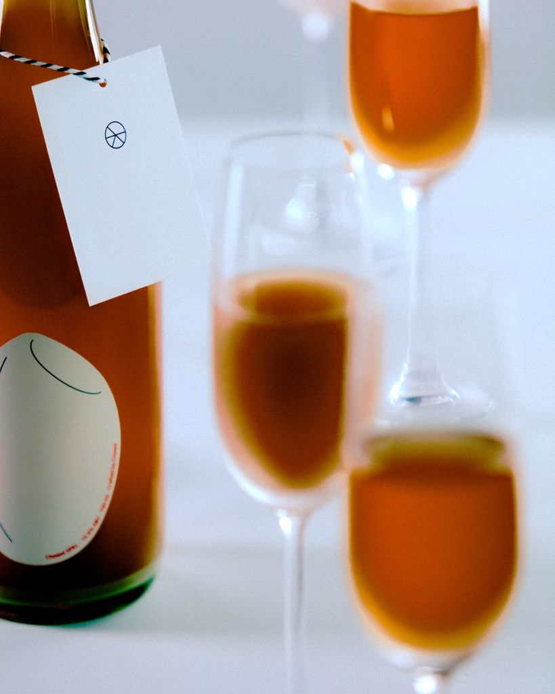

초월
방문 예약
초월
방문 예약
NEW — SPARKLING · 15.6% · 750ml
SPKL

와인 잔에 따르는 순간 가장 먼저 눈에 들어오는 것은 색입니다. 타트체리에서 비롯된 붉은 노을빛.
01타트체리의 산미
첫 모금에서 먼저 올라옵니다
02찹쌀의 감칠맛과 단맛
자연스럽게 이어집니다
03미세한 기포
입안을 가볍게 정리합니다

TWO GLASSES흔들거나,
흔들거나,
흔들지 않거나
병을 세워둔 채 윗부분만 맑게 따르면 가볍고 드라이한 산미가 먼저 느껴집니다. 어느 쪽이 더 맞는 방식인지가 아니라, 그날의 기분을 고르는 술입니다.
- 치즈산미와 기포가
- 튀김입안을 정리해
- 파스타다음 한 입으로
제품 정보
SPKL
- 알코올
- 15.6%
- 용량 · 가격
- 750ml 28,000원
- 원료
- 찹쌀 · 누룩 · 타트체리
- 발효
- 자연 발효 · 천연 미탄산
- 추천 잔
- 와인 잔
- 보관
- 냉장 보관 0–10℃
더 보기
전체 라인업